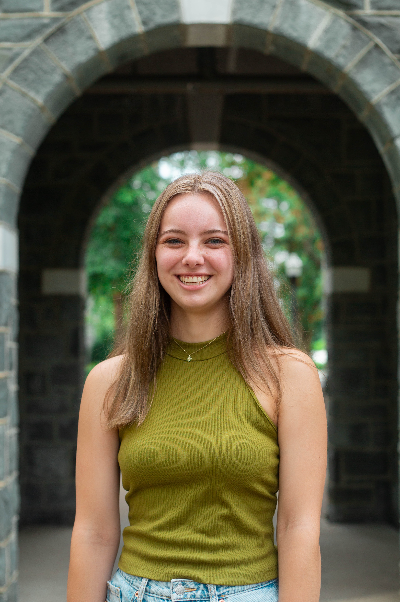

MIRA DOVER RESUME
ABOUT
I believe the key to fantastic work is patience, diligence, and an excited attitude. While I love design, I chose to study Media Arts because of the importance placed on function as well as form. I’m always ready for a challenge and excited to learn how I can exceed expectations!
SKILLS
- Writing
- Editing
- Digital marketing
- Adobe Creative Cloud
- Procreate
- MS Office Suite
- Google Suite
- MailChimp
- Social Media
- Wordpress
- Wix
- Trello
SOFT SKILLS
- Teamwork
- Creativity
- Optimisim
- Organization
DESIGN EXPERIENCE
JULY 2019 – PRESENT
Fredericksburg Parent and Family Magazine | SOCIAL MEDIA MANAGER
- Design and schedule 20+ social posts per-month on Facebook and Instagram
- Implement cohesive and modern social media advertising and branding
- Increase social media reach; recently, Facebook (24%) and Instagram (168%)
- Write and proofread articles and conduct formal interviews
2021 – PRESENT
Freelance Designer | VARIOUS REMOTE DESIGN PROJECTS
- Coordinate with clients and assess their unique needs
- Create designs for clients such as senior sports posters, stickers, logos, or t-shirts
SUMMER 2023
The State Corporation Commission | FULL-TIME DESIGN & OUTREACH INTERN
- Design, redesign, and modernize 20+ pamphlets, slideshows, social media posts, booklets, brochures, etc.
- Consult on a Virginia marketing campaign with ArBo Global to reach 6.3 million consumer impressions
- Learn, condense, and depict complex investing industry jargon/topics in tight copy and visuals
FURTHER EXPERIENCE
AUG. 2021 – PRESENT
Student Affairs Communications and Marketing | WRITER — JMU
- Work closely with 19 other students to create tight, concise copy for university communications
- Attend 1–2 events each week, conduct interviews, and write articles
- Create copy for websites, social media, and other communications
JUNE 2021 – PRESENT
Wine and Design Fredericksburg | ARTIST/INSTRUCTOR
- Lead and support painting classes of 10–14 children or adults
SUMMER 2022
Blue Dragon Publishing | REMOTE PUBLISHING INTERN
- Implement modern website marketing, writing, and design techniques to improve user experience
- Edit 2 client books for grammar, punctuation, and formatting
- Implement search engine optimization on 15+ web pages
EDUCATION
GRADUATION: MAY 2024
James Madison University | MEDIA ARTS AND DESIGN MAJOR
- Creative Advertising Concentration
- Honors Scholar
- Creative Writing Minor